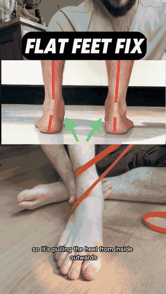
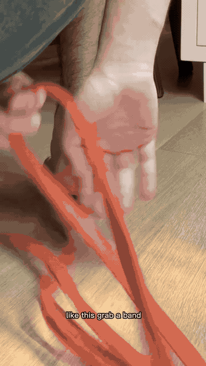
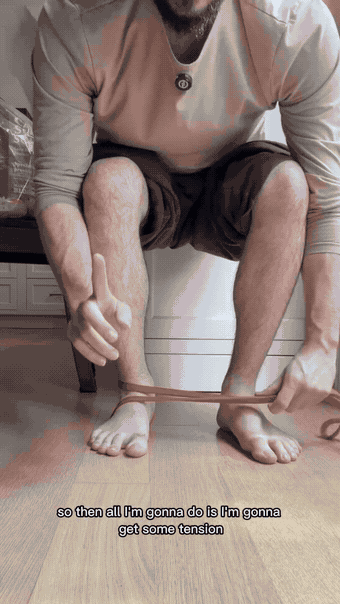
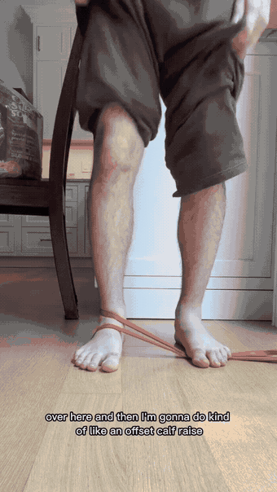
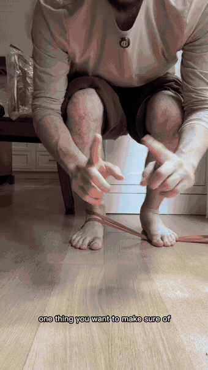
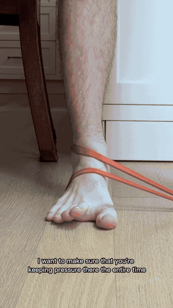
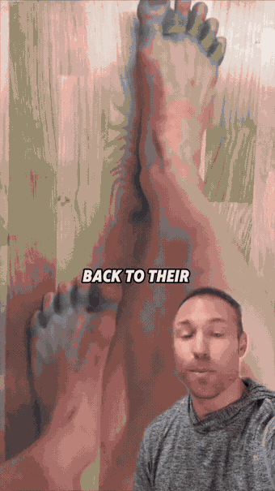

The band runs around the heel and pulls it from the inside outward . That single pull forces the hindfoot into inversion/supination — the exact position a flat, over-pronating foot never finds on its own. You're not stretching anything; you're training the arch to hold a position it has been collapsing out of all day.

Loop a light resistance band around the heel bone , then bring it over the top of the foot so it sits across the instep. This is the wrap that puts the pull on the right side of the joint.

Stand up and anchor the other end of the band under the ball of the opposite foot . Step the feet apart to dial in tension — the band should be pulling the working heel outward before you move at all.

The main event: with the band live, rise onto the balls of your feet and lower slowly. The offset stance means the feet are staggered — the band pulls one heel outward the entire time, so the calf raise is performed resisting that pull instead of collapsing into it.

Two checks decide whether this drill does anything: pressure on the first metatarsal (the ball of the big toe) stays on the floor, and the toes stay splayed . Miss them and the foot rolls onto its outer edge — the compensation you're trying to train out.

The payoff position: at the top of the calf raise the ankle rolls outward into hindfoot inversion / supination while the toes stay splayed flat. This is the arch-supporting position — the whole point of the drill, and the last thing to lock in.

Support move from the verified GIF library. A small loop band around both big toes, pulling them apart while you hold the arch — trains the muscle that abducts the big toe, which is exactly what fails when the arch collapses.